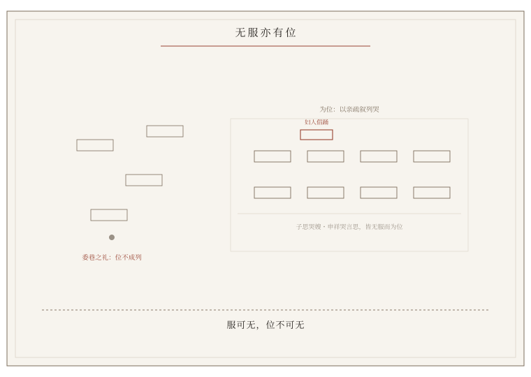

檀弓上 · 三·三十三 · 第 236 课
曾子曰：「小功不为位也者，是委巷之礼也。」子思之哭嫂也为位，妇人倡踊；申祥之哭言思也亦然。注「位谓以亲疏叙列哭也」「礼，嫂叔无服」。
说什么事：无服之亲，哭时也要排个位次。
落在哪一层：礼，兼及礼制与礼意。论「位」——哭的次序。
为何编在此位：上节论初死之奠，此节论哭之位。奠有物，哭有位，皆礼之形。
【经】曾子曰：「小功不為位也者，是委巷之禮也。」子思之哭嫂也為位，婦人倡踴；申祥之哭言思也亦然。
【注】讥之也。位谓以亲疏叙列哭也。委巷，犹街里委曲所为也。善之也。礼，嫂叔无服。妇人倡踊，有服者，娣、姒妇小功。倡，先也。说者云，言思，子游之子，申祥妻之昆弟，亦无服。过此以往，独哭不为位。
【疏】此一节论无服为位哭之礼。「小功不为位也」者，曾子以为哭小功之丧，当须为位；时有哭小功不为位者，故曾子非之，云：若哭小功不为位者，是委细屈曲街巷之礼。言礼之末略，非典仪正法。既言其失，乃引得礼之人子思之哭嫂为亲疏之位。于时子思妇与子思之嫂有小功之服，故子思之妇先踊，子思乃随之而哭。非直子思如此，其申祥哭妻之兄弟言思亦然，是亦如子思也。注「位谓亲疏叙列」：以其子思哭嫂为位，下云「妇人倡踊」，妇人既在先，明知为位也。云「委巷，犹街里委曲所为」者，谓庶人微贱在街巷里邑，委细屈曲，所为不能方正也。此子思哭嫂，是孔子之孙，以兄先死，故有嫂也。皇氏以为原宪字子思，若然郑无容不注，郑既不注，皇氏非也。孔氏《连丛》云「一子相承，以至九世」，及《史记》所说亦同者，不妨；虽有二子相承者，唯存一人，或其兄早死，故得有嫂。案《丧服》小功章「娣姒妇报」，传云「弟，长也」，郑注「娣姒妇」者，兄弟之妻相名也：长妇谓稚妇为娣妇，娣妇谓长妇为姒妇，谓据妇年之长幼，则不据夫年之大小。故成十一年《左传》「声伯之母不聘，穆姜曰：吾不以妾为姒」，是弟妻为姒；又昭二十八年《左传》「子容之母走谒诸姑，曰：长叔姒生男」，是亦谓弟妻为姒也，皆不系夫身长幼。云「倡，先也」者，案《诗》「倡予和女」，是倡为先。注「言思，子游之子，申祥妻之昆弟」者，谓妻之亲昆弟也。自此以外，皆不为位，故《奔丧礼》「哭妻之党于寝」，郑引逸《奔丧礼》云「一哭而已，不为位矣」。
为位 注「以亲疏叙列哭也」。按亲疏排定哭的位次。
委巷 注「犹街里委曲所为」。街巷里曲、不成规矩的做法。
倡踊 注「倡，先也」。妇人先踊，众人随之。
娣姒妇 兄弟之妻相称。注「长妇谓稚妇为娣妇，娣妇谓长妇为姒妇」。
言思 注「子游之子，申祥妻之昆弟」。
曾子说：「哭小功之丧而不排位次的，那是街巷里曲的礼。」子思哭嫂，是排了位次的，妇人先踊；申祥哭言思，也这样。
此节三层：一讥、两例。曾子所讥者，不是服之厚薄，是哭时有没有一个次序。子思哭嫂、申祥哭妻之弟，两人所哭者皆「无服」之亲，却都排了位、都由妇人先踊。此中有一层意思：服可以无，位不可无。
第一层 位是什么 注「位谓以亲疏叙列哭也」。不是坐处，是哭的次序——谁先、谁后、谁在前、谁在后。此层可见古人连「哭」这件事都要有结构：哀不可乱。
第二层 无服而有位 嫂叔无服，言思为妻之昆弟亦无服。服既无，礼仍未废。此一层最要紧：礼之「服」是身份的承认，「位」是关系的承认。人可以不为某亲服，却不能不为某亲留一个哭的位置。
第三层 妇人倡踊 注「有服者，娣姒妇小功」「倡，先也」。子思之妇与嫂有娣姒小功之服，故妇人先踊，子思随哭。此处有一层精微：有服者先，无服者后；服之有无，决定了谁先动。
第四层 委巷之讥 注「委巷，犹街里委曲所为」。庶人微贱在街巷里邑，所为不能方正。曾子此讥，语气很重：不为位，等于把丧礼降为街巷之法。疏又补「过此以往，独哭不为位」——此外无服之亲，一个人哭一哭便罢，不必排位。可见「位」也有其限，不是凡哭皆排。
与今日何干 今人办丧，多讲「到场」而不讲「次序」。此节所示：次序本身就是礼——它告诉每一个来哭的人，你与死者是什么关系，你该站在哪一处。
| 左 | 右 |
|---|---|
| 小功不为位 | 曾子讥之 |
| 是委巷之礼 | 街里委曲所为，非法仪正法 |
| 位谓以亲疏叙列哭 | 哭有次序 |
| 子思哭嫂为位 | 嫂叔无服而位不可无 |
| 妇人倡踊 | 有服者先，娣姒小功 |
| 申祥哭言思亦然 | 妻之昆弟，亦无服 |
| 过此以往，独哭不为位 | 位亦有其限 |
画一片庭中的地面，视点略俯。左半：几块小席散乱丢在地上，方向不一，彼此远离，席上无人，只有一个孤零零的跪痕。右半：同一片地面，七八块小席按前后左右排成有次序的行列，前列两块稍窄（示妇人之位），后列稍宽，每块席前有一处跪坐的压痕，行列最前方留出一块空席。左右两半之间以一道极淡的界线相隔。不写文字、不画人。赭色只用在右半最前方那块空席的边线上。
